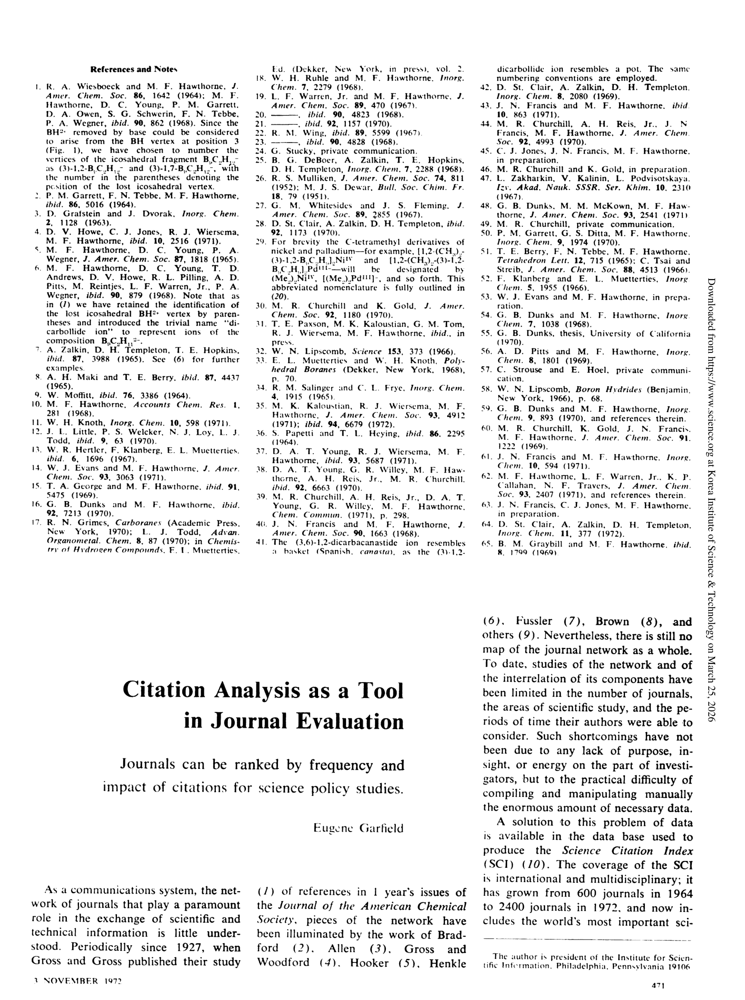

저자: Eugene Garfield | 날짜: 1972 | Journal: Science | DOI: 10.1126/science.178.4060.471 | arXiv: N/A
리뷰 모드: PDF
인용 분석은 저널 평가의 유효한 도구다. Garfield(1972)는 저널 임팩트 팩터(Journal Impact Factor, JIF) 개념을 공식 제안하고, Science Citation Index(SCI) 데이터를 이용해 저널이 과학 문헌에 미치는 영향력을 정량적으로 측정하는 방법론을 제시했다. 이 논문은 계량과학 분야에서 가장 많이 인용되는 고전 중 하나로, JIF가 수십 년간 학술 평가의 표준 지표가 된 것의 기초를 놓았다.

Figure 1
| 항목 | 점수 |
|---|---|
| Novelty | 5/5 |
| Technical Soundness | 3/5 |
| Significance | 5/5 |
| Clarity | 5/5 |
| Overall | 5/5 |
총평: 저널 임팩트 팩터(JIF)를 최초로 공식 정의하고 저널 평가 도구로 제안한 계량과학의 가장 영향력 있는 고전 논문으로, 수십 년간 학술 평가의 표준 지표가 된 JIF의 이론적·실용적 기반을 마련했다.